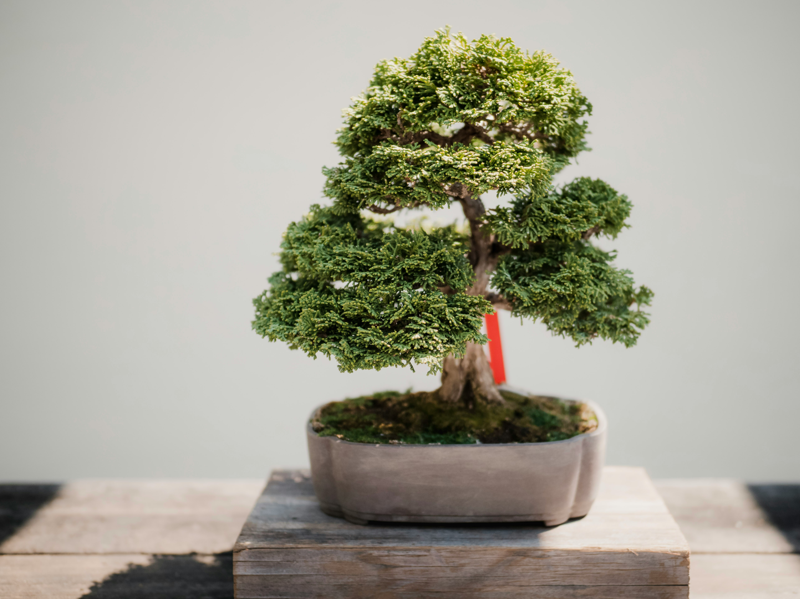
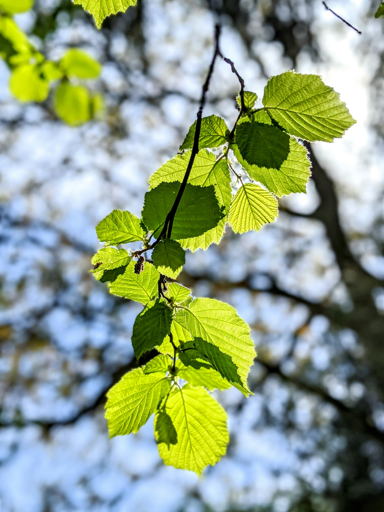

Why are trees so important in the world today?
Image by: Mark Tegethoff
Trees take years, even decades to mature, and they provide so many benefits to our ecosystem, and the livelihood of humans. One of the main reasons why trees are useful to humans is because wood, which only trees can provide, is used in the production of so many things. From houses, to furniture and artwork, wood is an essential building material for so many things that humans utilize and interact with in their daily lives.

Image by: Alexandre Jaquetoni

Image by: Thom Milkovic

Image by: Ryan Riggins
Trees are not only useful for building and manufacturing though, trees are an essential part of the global ecosystem. Trees absorb carbon dioxide, which the human race produces in mass amounts through simply breathing. Through photosynthesis, trees take the carbon dioxide which we humans produce, and turn it into oxygen, which we humans need in order to live! Now you are starting to understand just how important trees are to human lives.
Image by: Flash Dantz
Not only do trees support human life, but they also can be a form of therapy! There is a type of therapy called “Forest Bathing” where a person goes out into a forest to reconnect with nature, which reduces stress and anxiety.

Image by: Luca Bravo
To learn more about trees and their importance, check out the following websites!
- Top 5 Benefits of Trees - Lake Simcoe Conservation Authority
- The Benefits of Planting Trees for our Planet - OneTreePlanted.org
- How Trees Make a Difference - National Wildlife Federation
- The Power of Trees - Government of Canada
- Trees and Their Essential Role in Biodiverse Ecosystems - Arbor Day Foundation
- Why Are Trees Important to the Environment? - C02 Australia
Credits!
Websites used for reference:
- Lake Simcoe Conservation Authority
- OneTreePlanted.org
- National Wildlife Federation
- Government of Canada
- Arbor Day Foundation
- C02 Australia